Astro Human tension. Product payoff.
AI + EDITINGA story-led commercial connecting a human moment to a clear product reveal and branded close. AI scene development meets compositing and editorial control.
I blend art direction, AI-assisted filmmaking and brand design to turn a message into something worth watching.
Explore the work ↓Three films. Three different visual approaches.
Supported by the brand systems behind the craft.
A story-led commercial connecting a human moment to a clear product reveal and branded close. AI scene development meets compositing and editorial control.
Warm light, controlled composition and a premium beauty-film mood. A contrasting visual language to the narrative-led Astro advert.
A compact envelope reveal built around product visibility, clean composition and a focused visual payoff.
The brief: Make a broad operating platform immediately useful to service-business owners.
The approach: Pain-point-first headlines, focused UI proof and consistent indigo brand cues. Alternating dark and light layouts create variety inside a recognisable system.
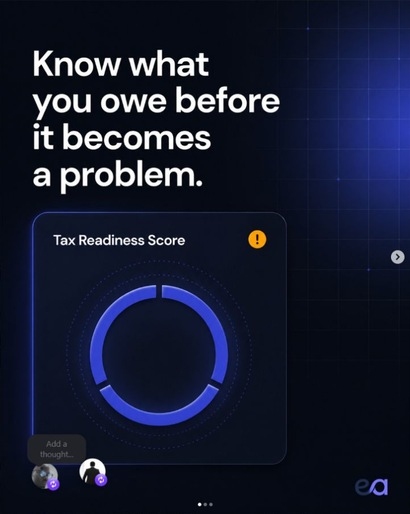
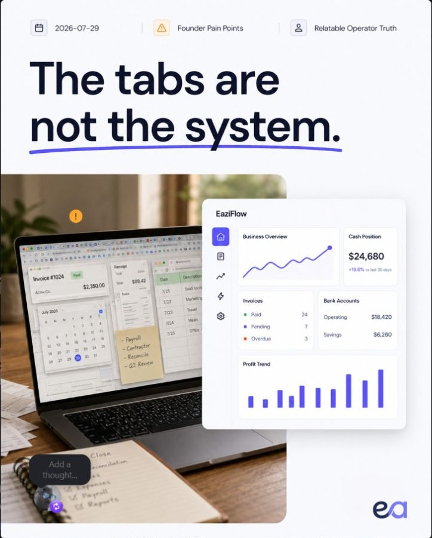
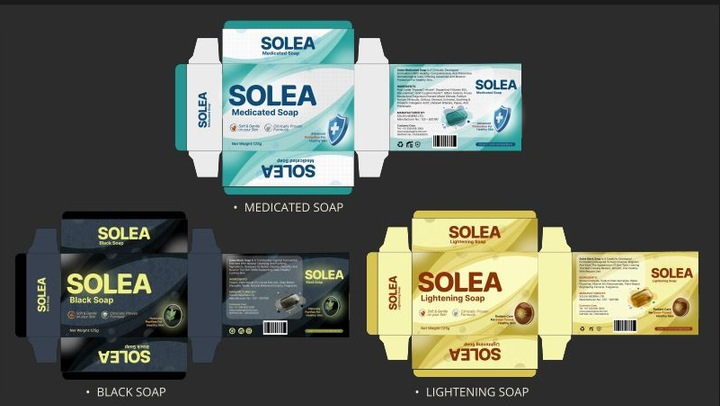
05 / PACKAGING + 3DThe brief: Unify Medicated, Black and Lightening Soap variants without losing shelf differentiation.
My role: Packaging architecture, hierarchy, visual direction and 3D simulation. A fixed grid and function-led colour system keep claims easy to scan and the family ready to extend.
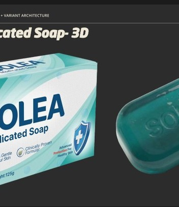
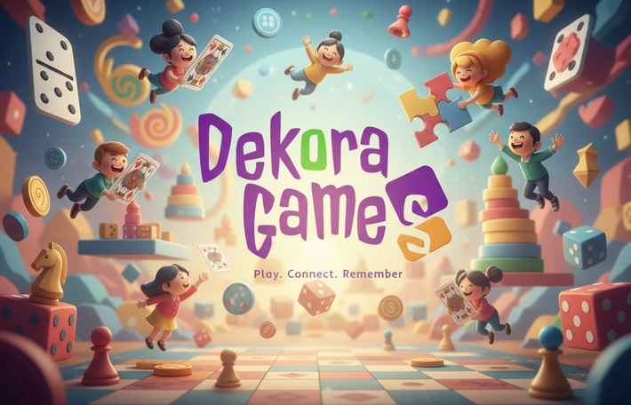
06 / IDENTITY TO OBJECTThe approach: A purple-led identity translated into card architecture and physical packaging. Logo, content hierarchy and box presentation work as one connected experience.
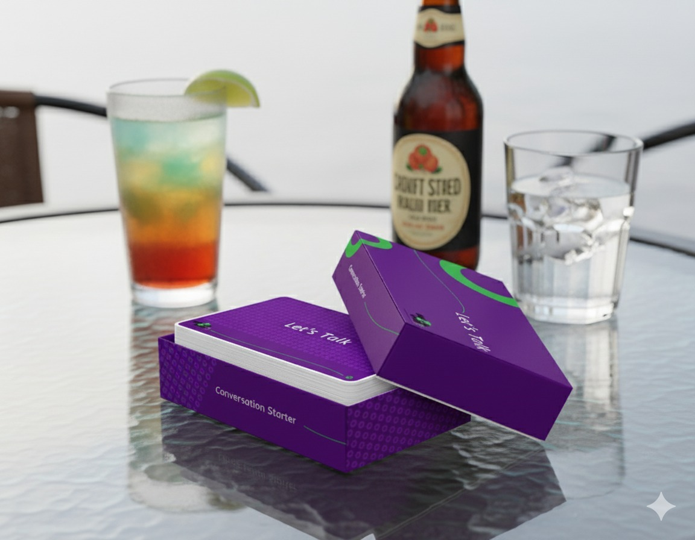
These are creative-production samples; no paid-media conversion or ROAS results are claimed.
Selected Illustrator projects: packaging systems, unfolded artwork and editorial pages. Every image keeps its full composition. Select an image to inspect it at full size.
The big idea: Let the product function change the colour, not the whole identity. A common grid, logo position and claims hierarchy tie Medicated, Black and Lightening Soap together while each variant remains easy to recognise.
My contribution: Packaging architecture, visual hierarchy, variant design and 3D presentation.
Design-to-production thinking: Carry the same visual system around the carton panels, then use a 3D view to review how the front and side faces relate.
Explore the original case study ↗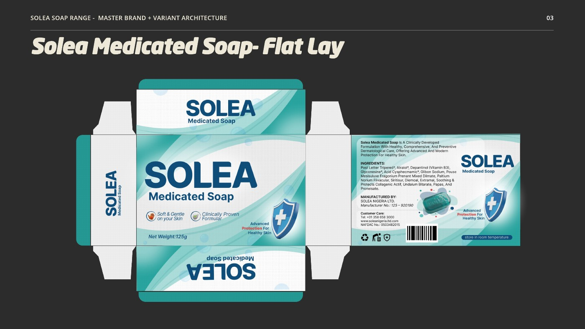
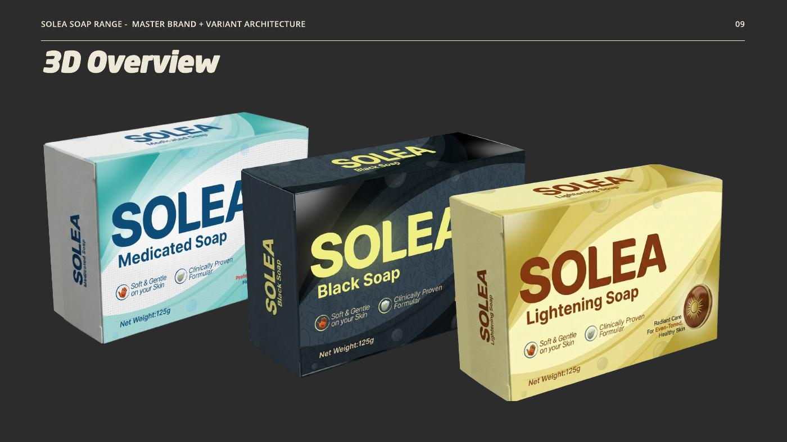
The big idea: Turn a conversation game into a cohesive, tactile brand experience. Purple and green create an energetic contrast; restrained typography leaves space for the invitation to play.
My contribution: Identity application, card layouts, box artwork and 3D mockups.
Design-to-production thinking: Treat lid, base and cards as one connected system. The flat layout shows the panel relationships; the mockup explains how those surfaces meet in use.
Explore the original packaging project ↗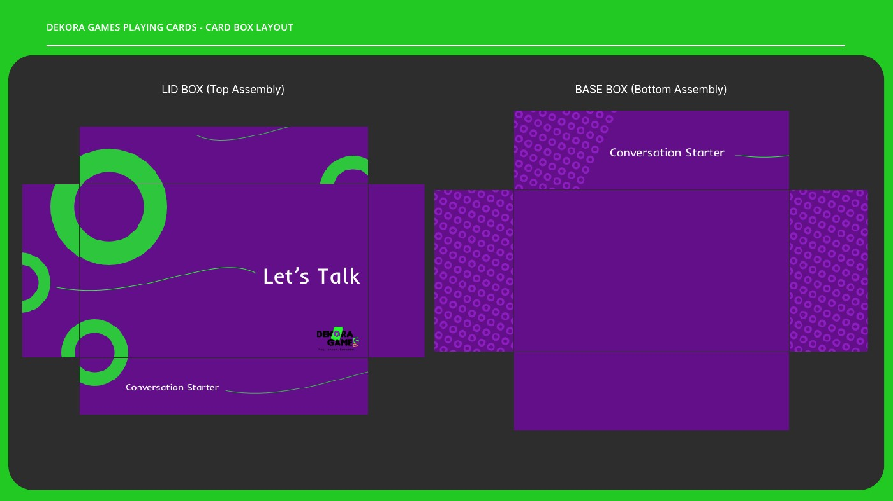
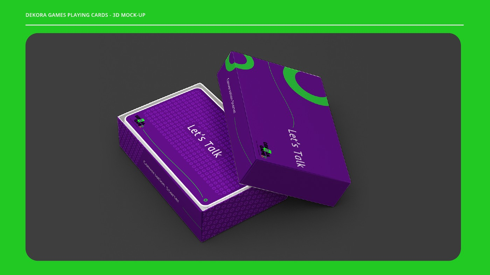
The big idea: Make a specialist legal update approachable without diluting its authority. Strong blue headings, a clear reading order and recurring brand elements guide the reader through dense information.
My contribution: Brochure layout, typography and visual information hierarchy.
Design-to-production thinking: Build a repeatable page system that accommodates body copy, contact information, imagery and footnotes while preserving the full page layout.
Historical publication shown as a design sample. Legal analysis and publication content belong to Templars; this is not current tax guidance.
Read the original brochure ↗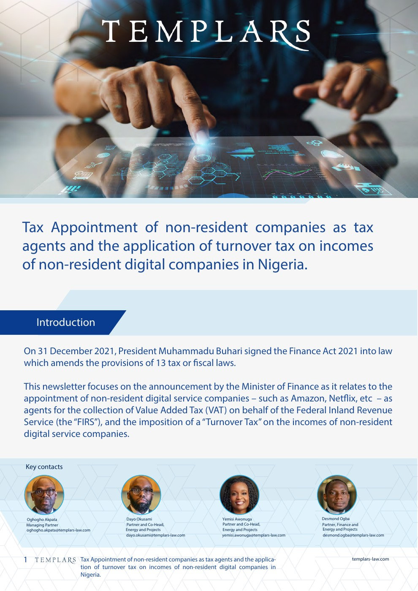
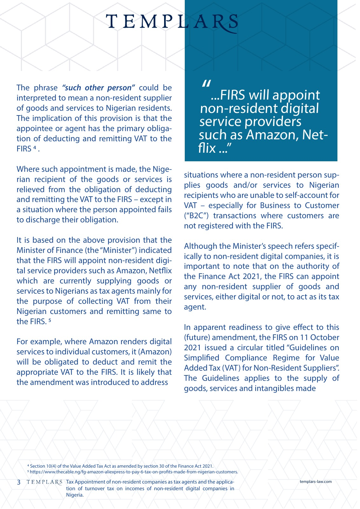
Packaging mockups communicate intended appearance; flat artwork is shown for design review, not as a claim of a press-certified production file. More campaign and print work ↗
AI expands the possibilities. Human direction makes the result feel intentional, coherent and true to the brand.
Define the audience, hook, message and visual territory before generating assets.
Develop anchor images, explore scenes and refine composition, lighting and product fidelity.
Shape pacing, transitions, typography and the product reveal into a complete commercial sequence.
Review continuity, textures, brand accuracy and final output. Keep the strongest work, not every generation.
Senior Brand Designer · Creative Lead · AI + Motion
I’m a Lagos-based creative with experience across beauty, FMCG, SaaS and consumer products. I connect brand strategy with hands-on production—from packaging and campaign systems to motion and AI-assisted films.
My background includes TopwideCare, TGI Group and Promasidor, with work across multi-brand teams, agencies and print-production partners.
View press, print & packaging work ↑After Effects · Premiere Pro · CapCut · Photoshop · Illustrator · Cinema 4D · Figma
GPT-image-1 anchor imagery · Veo 3.1 animation · compositing, editing and human quality control
Open selected portfolio folder ↗